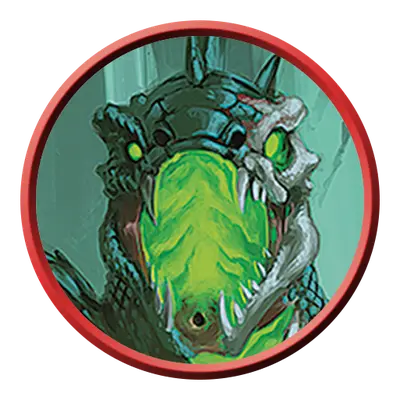

Саррух восставший
Arisen Sarrukh
Средняя Нежить, Нейтральная Злая

Класс Защиты 18 Инициатива +9 (19)
Хиты 273 (26к8 + 156)
Скорость 40 футов
| мод | спас | ||
|---|---|---|---|
| СИЛ | 23 | +6 | +12 |
| ЛОВ | 17 | +3 | +9 |
| ТЕЛ | 22 | +6 | +12 |
| мод | спас | ||
|---|---|---|---|
| ИНТ | 18 | +4 | +4 |
| МДР | 17 | +3 | +9 |
| ХАР | 18 | +4 | +4 |
Иммунитеты Некротический, Огонь, Яд; Испуганный, Истощение, Отравленный, Очарованный
Чувства пассивное Восприятие 19, Истинное зрение 120 футов
Языки Общий, Драконий, Телепатия 120 фт.
Опасность 18 (20 000 опыта; БВ +6)
Особенности
Легендарное сопротивление (3/день). Если саррух проваливает спасбросок, он вместо этого может в нём преуспеть.
Сопротивление магии. Саррух совершает с Преимуществом спасброски от заклинаний и прочих магических эффектов.
Действия
Мультиатака. Саррух совершает три атаки Трезубцем или Некротическим плевком в любой комбинации.
Трезубец. Бросок рукопашной атаки: +12, досягаемость 10 фт. Попадание: 33 (6к8 + 6) Колющего урона.
Некротический плевок. Бросок дальнобойной атаки: +12, дистанция 90 фт. Попадание: 11 (2к10) урона Ядом плюс 22 (4к10) Некротического урона.
Бонусные действия
Ядовитый телепорт (Перезарядка 5–6). Саррух телепортируется на расстояние вплоть до 120 футов в видимое им незанятое пространство, и все существа (по выбору сарруха) в пределах 10 футов от пространства, которое он покинул или куда прибыл, подвергаются следующему эффекту. Спасбросок Телосложения: Сл 20. Провал: 22 (4к10) урона Ядом. Успех: Только половина урона.
Реакции
Власть над перевоплощением. Условие: Видимое саррухом существо перевоплощается. Эффект: Саррух сам выбирает конечную форму из доступных перевоплощающемуся существу или предотвращает перевоплощение этого существа.
Бонус мастерства +6
Среда обитания Подземье
Сокровища Реликварные
Саррухи
Злобные змееподобные угнетатели
Могущественные мастера магии, саррухи некогда повелевали жестокой империей, простиравшейся по всему Фаэруну, но она пала десятки тысяч лет назад. В последовавшие тысячелетия многие виды, созданные саррухами, довели их почти до полного вымирания. В уединённых анклавах сохранилось лишь небольшое число саррухов, включая и небольшую общину под Цитаделью в самом сердце горы Горы Тэй.
Саррухи обладают змеиными нижними телами и головами, но их торсы напоминают человеческие. Их блестящие глаза светятся внутренним огнём. Саррухи живут до тысячи лет, и многие ожидают, что их империя возродится.
Самые могущественные саррухи — восставшие: ужасающие создания, обманувшие саму смерть. Хотя восставшие саррухи утратили способность творить заклинания, их неживая плоть неестественно сильна.